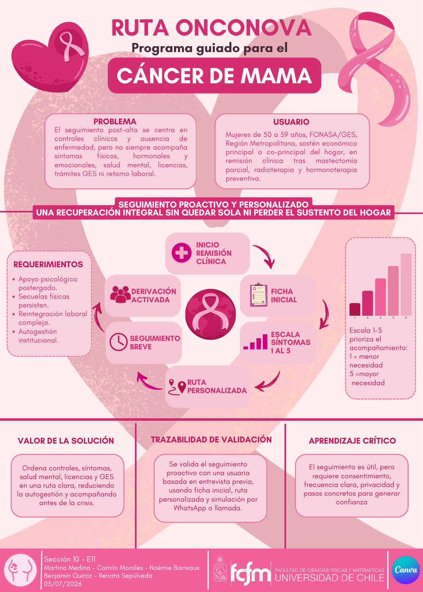

Las necesidades no son iguales.
Los relatos muestran diferencias en el apoyo que cada mujer desea y en su red cercana. Diseñamos una decisión voluntaria.
Después del tratamiento por cáncer de mama
Cada mujer vive esta etapa de forma distinta. OncoNova propone acompañar el acceso al apoyo que necesita, con una decisión propia y un camino más claro.
Conoce nuestra historiaProyecto académico en desarrollo
01 Desafío
Exploración del problema
Una indicación de apoyo puede ser solo el comienzo. Buscar contactos, coordinar horarios y saber si una derivación avanzó puede quedar en manos de la propia usuaria.
Las entrevistas del equipo mostraron experiencias distintas y una pregunta común para el diseño: ¿quién acompaña ese siguiente paso?
Mujeres de 50 a 59 años, usuarias de FONASA/GES en la Región Metropolitana, sostenedoras del hogar, durante los primeros 12 meses después del tratamiento activo.
Fuentes: Hito 1, entrevistas y alcance del equipo. El perfil es el foco del proyecto; la muestra incluye experiencias fuera de este perfil.
02 Propuesta
Servicio por diseñar y validar
Proponemos un servicio dentro de una institución de salud: acordar un apoyo prioritario con la usuaria, activar el contacto y comprobar qué ocurrió.
Reconocer la necesidad y respetar la decisión de aceptar, postergar o no solicitar apoyo.
Acordar el apoyo pertinente, quién se hace cargo y cuál será el próximo contacto.
Un responsable institucional contactaría al servicio receptor mediante canales existentes.
Distinguir entre solicitud, espera y atención. Si algo se detiene, registrar la barrera y coordinar.
Puede ser emocional, de rehabilitación o de orientación social y laboral, según lo que se acuerde con profesionales. Una derivación prioritaria para el piloto no reemplaza otras indicaciones clínicas.
Un responsable visible. Esa es la diferencia entre entregar información y acompañar una gestión.
Institución piloto por definir. Aún debemos comprobar responsables, capacidad y disponibilidad. El servicio no crea cupos por sí solo.
Fuentes: torneo de oportunidades y decisión del equipo. El diseño del servicio es una propuesta nueva de esta versión.
03 Prototipo
Maqueta conceptual · Sin probar
Una conversación, una ficha del siguiente paso y un registro de seguimiento permiten representar la experiencia antes de implementar una solución.
Para esta versión creamos una primera maqueta del recorrido. Nos ayudará a probar si la decisión se respeta, el responsable se entiende y los estados del proceso son claros.
Explorar la maquetaCreada con apoyo de IA para este sitio. Aún no probada con usuarias; sin solicitudes reales.
Tú eliges cómo continuar.
Las tres decisiones son válidas. Selecciona una para ver cómo la propuesta la respetaría.

El póster representa la etapa en que imaginábamos una ruta integral. Su mención de validación corresponde a una simulación basada en una entrevista previa.
No demuestra que el servicio actual esté construido o validado. Hoy acotamos el recorrido a una derivación prioritaria y hacemos explícito quién debe acompañarla.
Fuentes: plan de prototipado, póster histórico y maqueta de esta versión.
04 Validación
Necesidades exploradas
Las entrevistas nos ayudaron a entender el problema. La siguiente pregunta es si el servicio propuesto mejora la experiencia; eso todavía no lo hemos evaluado.
Cuatro mujeres y una profesional de oncología. Experiencias distintas sobre apoyo, trabajo, información y coordinación.
Muestra cualitativa de perfiles diversos, algunos fuera del foco de diseño. No representa a todas las sobrevivientes.
Exploración de necesidadesRegistros de entrevistas, revisión documental, reformulación del problema y una maqueta conceptual nueva.
Pruebas del prototipo, resultados de conducta, factibilidad operativa y una institución piloto.
Los cinco escenarios del informe final son simulaciones. No se suman como entrevistas reales.
Fuentes: Hito 1, registros de entrevistas y confirmación del equipo.
05 Resultados
Hallazgos cualitativos
La exploración orientó decisiones de diseño. Aún no tenemos resultados que demuestren la eficacia de la solución.
Los relatos muestran diferencias en el apoyo que cada mujer desea y en su red cercana. Diseñamos una decisión voluntaria.
La coordinación, los cupos y el tiempo disponible pueden detener el proceso. Proponemos activar y seguir el contacto.
El seguimiento necesita distinguir estados y responsables. Proponemos confirmar el resultado y registrar las barreras.
Meta exploratoria del RIA
≥80%
El RIA propone este umbral para elección voluntaria, avance acompañado y compatibilidad del acceso. Los campos de resultados están vacíos y el criterio debe revisarse para el alcance actual.
Revisar el origen de la metaFuentes: Hito 1, entrevistas y RIA. No se han medido reducción de espera, acceso efectivo ni impacto del servicio.
06 Aprendizajes
Decisiones de diseño
La idea inicial de una plataforma integral era demasiado amplia. El recorrido se volvió más concreto al concentrarnos en una necesidad y en la gestión de su siguiente paso.
Rechazar o postergar un apoyo debe ser una opción válida, sin presión.
Primero necesitamos definir el servicio, sus responsables y su capacidad real.
Si no hay cupo o coordinación, el registro debe mostrarlo. Un estado no puede dar por resuelta una necesidad.
Fuentes: Hito 1, generación de ideas, torneo y entrevistas.
Detrás de esta historia
Usamos material propio del equipo. Los documentos en Drive pueden requerir acceso; aquí compartimos una síntesis sin datos de las entrevistadas.
Exploración del problema y cinco entrevistas. Septiembre de 2026; foco entonces psicológico.
Abrir documento en Drive (nueva pestaña; puede requerir acceso)Ideas de solución y estimaciones iniciales, pendientes de validación.
Abrir documento en Drive (nueva pestaña; puede requerir acceso)Elección de un acompañamiento voluntario y su flujo propuesto.
Abrir documento en Drive (nueva pestaña; puede requerir acceso)Indicadores y metas. Los resultados no están completados.
Abrir RIA en Drive (nueva pestaña; puede requerir acceso)Plan de prueba en papel del 6 de octubre de 2026. No es un resultado de validación.
Abrir plan en Drive (nueva pestaña; puede requerir acceso)Antecedente de julio de 2026. Su simulación corresponde a una propuesta anterior.
Ver el póster completoCinco conversaciones reales, según confirmación del equipo. Hallazgos cualitativos y perfiles diversos. Los originales se conservan privados.
Confirmado el 10 de octubre de 2026: una derivación prioritaria; sin solución construida o probada antes de esta versión, sin institución piloto.
Diseño conceptual creado con apoyo de IA para contar y explorar el servicio. Aún no validado con usuarias.
Explorar la maquetaEsta página presenta un proyecto académico y una propuesta de servicio en desarrollo. No permite pedir una atención ni confirma disponibilidad de apoyos.